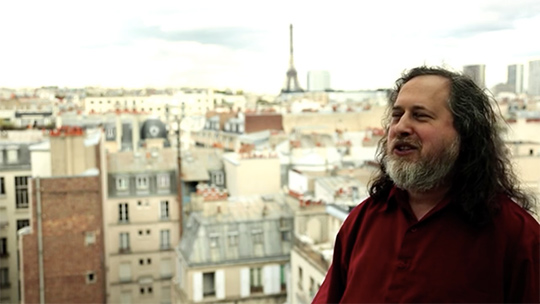

Donnees-a-voir
Films / documentaires
Citizen Four ( sur E. Snowden ) - Laura Poitras 2014
Citizenfour traite de la surveillance mondiale généralisée et retrace l'histoire d'Edward Snowden de Hong Kong à Moscou. En janvier 2013, Laura Poitras a reçu pour la première fois un e-mail anonyme signé « Citizen Four », le nom de code que s'était donné Snowden. Il y explique qu'il propose de rendre publique une grande quantité d'informations sur les pratiques de surveillance illégales de la NSA et d'autres agences de renseignement. Poitras travaillait déjà sur un film traitant des programmes d'écoutes américains suite aux attaques du 11 septembre. Avec le journaliste d'investigation Glenn Greenwald et un reporter du Guardian, Ewen MacAskill, elle se rend à Hong Kong pour filmer la rencontre avec le lanceur d'alerte qui se révèle être Edward Snowden. Ils se rencontrent plusieurs fois sur une période de huit jours dans la chambre de l'hôtel Mira à Hong Kong.
Source : https://fr.wikipedia.org/wiki/Citizenfour#Synopsis
Risk ( sur Wikileaks ) - Laura Poitras 2016 ( pas encore sorti en DVD )
Présenté à la Quinzaine des réalisateurs de Cannes 2016, Risk retrace l’aventure des fondateurs de Wikileaks et surtout celle de Julian Assange. Le travail de Laura Poitras a commencé avant même celui sur Citizen Four et a nécessité 5 années. Le film se présente comme un thriller et montre les enjeux internationaux de manière intime, avec un Julien Assange sûr de lui, qui est au final le sujet principal du film.
The Internet’s own boy ( sur Aaron Swartz ) Brian Knappenberger 2014
L’histoire du prodige de la programmation et célèbre activiste Aaron Swartz, connu pour avoir cofondé le réseau social Reddit et créé la technologie des flux RSS, à peine âgé de 14 ans. Son engagement pour la justice sociale et son combat pour la liberté de l’information l'entraîneront dans un véritable cauchemar juridique, qui va se solder par son suicide en 2013. Le film retrace le parcours singulier de ce génie des temps modernes.
Source : Allociné
https://www.youtube.com/watch?v=7ZBe1VFy0gc
The human face of big data - Sandy Smolan 2014 ( DVD non distribué en Europe )
Un livre et un DVD contenant de nombreux graphiques, interviews, photographies pour rendre compte de la révolution en marche, presque de manière invisible, à travers les affaires, l’éducation, les gouvernements, la santé, et la vie quotidienne. Elle nous permet déjà d’offrir à nos enfants une vie en meilleure santé, de permettre aux seniors indépendance et sécurité, nous aide à conserver nos précieuses ressources comme l’eau et l’énergie, nous alerte de minuscules changements de notre santé, des semaines ou des années avant de développer une maladie grave, de plonger dans notre patrimoine génétique individuel, de créer de nouvelles formes de vies, et bientôt comme beaucoup le prédisent de re-construire notre espèce. Et nous avons à peine gratté la surface…
http://thehumanfaceofbigdata.com
http://www.rocofilms.com/film.php?code=HFBD
© Peter Menzel 2012 / from The Human Face of Big Data sur le site http://thehumanfaceofbigdata.com
Marketing - stratégies secrètes - Cash Investigation
Noms, prénoms, adresses, âges, mais aussi passions et habitudes de consommation : certaines entreprises récoltent une foule d'informations sur les clients qui achètent, sur Internet ou encore par le biais de leurs cartes de fidélité. A longueur de transactions, ces sociétés enregistrent, compilent et analysent les données personnelles recueillies de manière à mieux cerner leurs cibles potentielles. Pendant un an, une équipe a enquêté sur les techniques marketing des grands groupes, comme Apple ou Danone, et leurs stratégies commerciales tenues secrètes. Comment imposent-ils leur diktat sur le marché ?
https://www.youtube.com/watch?v=dMgh1UAfn7A

Une contre-histoire de l’Internet - Julien Goetz et Jean-Marc Manach 2013
Pur produit de ses utilisateurs, internet est un espace de liberté qu’il est impossible de censurer ni de contrôler. C’est pourtant ce que cherchent à faire, depuis des années, un certain nombre de responsables politiques. La «contre-histoire de l’internet » est celle de tous ceux qui se sont battus pour que les autres puissent s’exprimer et qui, depuis des années, combattent la censure et défendent la liberté d’expression. Pour raconter cette contre-histoire, une trentaine de grand acteurs du Net prennent la parole. John Perry Barlow, pionnier des réseaux, qui rappelle que les créateurs du Net étaient des hippies adeptes du LSD ; Rick Falvinge, fondateur du parti « pirate »; Vinton Cerf, le «père de l’internet»; et un entretien avec le fondateur de Wikileaks : Julian Assange. Diffusé en 2013 sur Arte, Une contre-histoire de l’Internet est le premier webdoc crowdsourcé (nourri des contributions des internautes).
http://www.pltv.fr/fr/une-contre-histoire-de-linternet/
http://lesinternets.arte.tv

Death defying acts of arts and conspiracy ( sur Mark Lombardi ) Mareike Wegener 2011
Un film sur l’artiste américain Mark Lombardi qui a créé une œuvre mettant à plat les pouvoirs et les réseaux opaques des élites globales du milieu de l’économie et de la finance, aussi bien que de terroristes, et donc les travaux les plus aboutis connectent des liens après les attaques du 11 septembre 2001. Le film dresse le portrait d’un artiste brillant qui a pris la posture d’un lanceur d’alerte en utilisant l’information publique et l’arrangeant de manière à exposer les plus grandes pratiques illégales dans le monde globalisé.
http://www.brooklynfilmfestival.org/films/detail.asp?fid=1219
Exposing the invisible
Une série de films courts, interviews, guides et ressources, explorant les différentes techniques, outils et méthodes en rapport avec les pratiques individuelles de ceux qui travaillent aux nouvelles frontières de l’investigation.
https://exposingtheinvisible.org